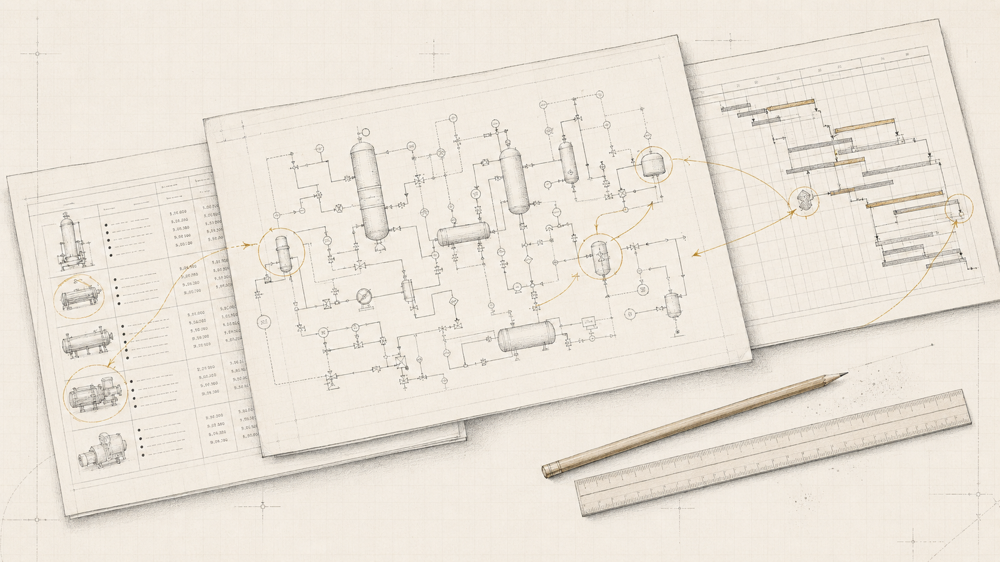
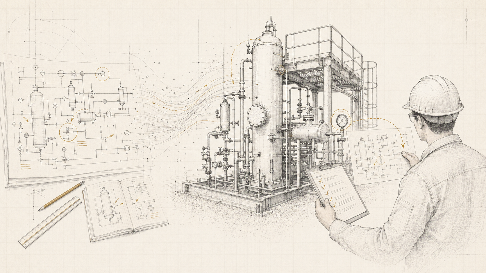

Entering Japan with a plant project
You have a site or a Japanese partner, and the designs and quotations arrive in Japanese. You need someone on your side who can check them against Japanese practice.
OWNER'S ENGINEERING / JAPAN
We work for project owners, not for contractors. For companies from outside Japan that are building or investing in energy facilities here, we read the Japanese designs, quotations and regulations and tell you what they mean before you commit.
The principal spent 13 years designing, building and commissioning LNG terminal facilities at a major Japanese EPC contractor, and handles every engagement personally.

We sort out the technical questions on your side
before you negotiate with vendors and contractors.
Companies from outside Japan that need technical judgement on the Japanese side of a project.
You have a site or a Japanese partner, and the designs and quotations arrive in Japanese. You need someone on your side who can check them against Japanese practice.
You want an independent view of the design basis, the EPC price and the permitting schedule for your own investment decision.
Your equipment has to meet Japanese codes and pass inspection here. We work through the technical requirements and documents with your engineering team.
Scoped to the decision in front of you. A single review is fine.
We would rather say this at the start than halfway through a project.
Remote by default, on site when it matters.
A monthly hour cap agreed in advance. Weekly online meetings and asynchronous review of documents.
A single document review, regulatory screening or inspection visit. On site only for inspections, kick-offs and similar occasions.
TERMSThe principal handles every engagement personally; nothing is subcontracted. We sign a non-disclosure agreement before receiving project documents. We work in English and Japanese, on Japan time (UTC+9).

REVIEW / NEGOTIATION / REPORTThe principal used to be on the other side of the table, writing the designs and quotations that owners receive. That is how he knows where the design margin sits in a Japanese quotation.
Information learned at previous employers and in client work is confidential and is never reused on other projects. Client names are not disclosed either.
Thirteen years on the contractor side, then two years on the owner's side. The principal handles every engagement personally.
Thirteen years at a major Japanese engineering and construction company in mechanical design, construction and commissioning, mainly of LNG receiving terminals, calorific value adjustment units and boil-off gas compressor systems. Engineering manager on a geothermal power plant project, including coordination with overseas equipment vendors.
Two years on the owner's side of energy projects: new biomass fuel development, feasibility studies and cash flow models, and purchase specifications for EPC contractors.
In English or Japanese. Early-stage enquiries are welcome.